仪器评测/闪烁体计数器
闪烁体计数器 RADIACODE 102 评测
这款设备出了很久了，它以强大的续航和便携性闻名于原子物理爱好者中；
今年更新了能量补偿和略微优化了能量分辨率，型号数字从101变为102。
闪烁体计数器 RADIACODE102是从RADIACODE官网自费购买的，所以总结一下使用感受。
作为撰写各类核仪的作者，RADIACODE 给与了我优惠，非常感谢！
这篇文章在我的Bilibili也有同步
参考：闪烁体计数器 RadiaCode 102 快速评测
关于 RADIACODE102
RADIACODE102 是使用闪烁体的辐射测量仪（闪烁体计数器）。
功能包括：
- 剂量记录功能
- 可以记录剂量率累计值，累计存储剂量。
- 电池
- 供电电池为3.7V 1000mAh锂电池，单次充电续航长达 200 小时。
- 光谱
- 可以显示接受到辐射的光谱以进行核素分析。
- 显示与声音
- 可以打开/关闭声音、背光、计数声。
- 快速响应
- 在感知到突发大剂量时会直接统计当前剂量而不是慢慢升上去。
- 地图绘制
- 基于Google Map的地图绘制功能，可以记录经过地点的剂量率与计数率。
内容物
您收到的东西如下图所示
还送了充电用的数据线

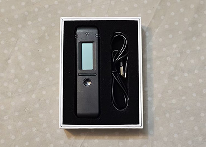
主体看起来是这样。
外观和上一代没有区别
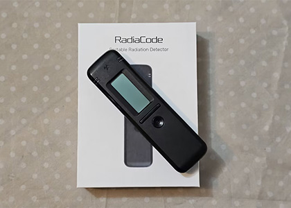
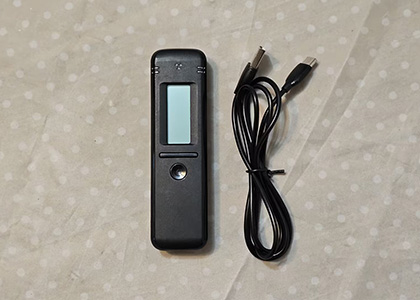
尺寸
这是尺寸对比。
它重 67 克，长度和 DISC 差不多，对于闪烁体计数器来说非常小。
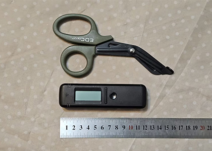
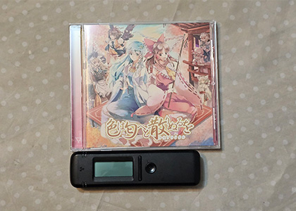
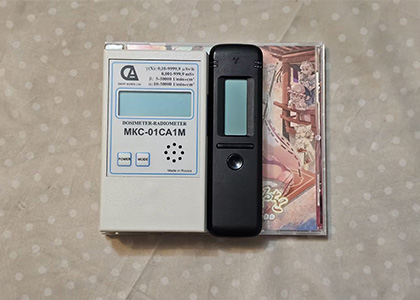
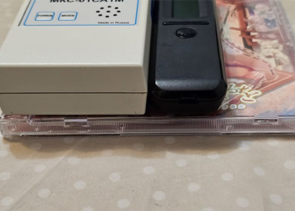
传感器部分
RADIACODE 102使用 CsI (Tl) crystal 10х10х10 mm + 固态光电倍增管
Cs-137能量分辨率约为9-10% (FWHM)，我拿到的这台实测为9.91%@Cs-137
测量光子能量范围为0.02 - 3.0 MeV，剂量率指示为0.01 - 1000 μSv/h
画面显示
第一次开机后默认进入剂量率测量页。
画面显示如下。
从左开始依次是“剂量率页”、“剂量页”、“光谱图页”、“搜索页”。
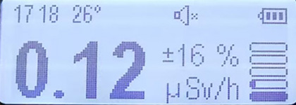
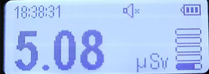
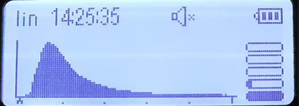
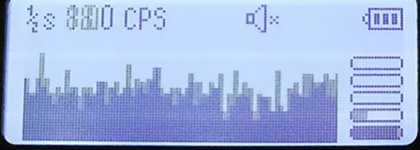
功能
功能上和旧版本相差不大，主要差异为能量补偿，具体请参考：闪烁体计数器 RadiaCode 102 快速评测
结果显示在配备自动背光的 LCD 上，并且屏幕根据设备的位置旋转。在主屏幕上我们看到：
- 剂量强度
- 测量误差%
- 五段程度填充剂量率阈值
- 电量指示
- 键盘锁符号
- 声音信号符号
- 设备温度
- 当前时间
设备通过两个按钮进行操作。大的圆形按钮用作电源开关（长按）、键盘锁定（短按）和进入菜单（长按）以及更改菜单中的值。使用长方形键（充当“上下”光标）在菜单中导航，并且在特定模式下工作时，更改结果的显示方式。
光谱图
如果想进行核素分析我建议使用智能手机APP进行，由于能量分辨率较差，和屏幕分辨率的限制，仪表本身的谱图并不好看，以下是智能手机APP的示例：
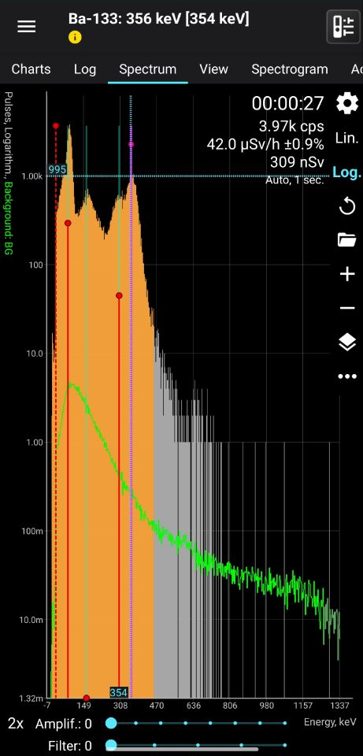
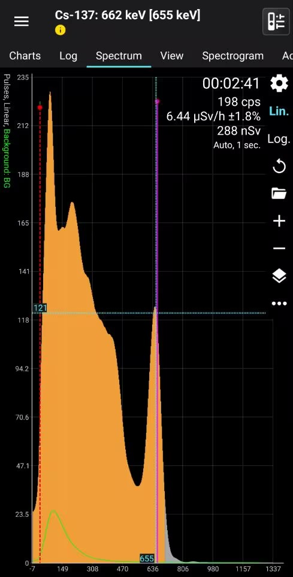
背光/检测音/报警功能 开/关
这三种功能均可以单独设置，我的设置为背光开(30秒)，检测音和报警音关；
同样推荐使用APP进行更改，更方便、直观
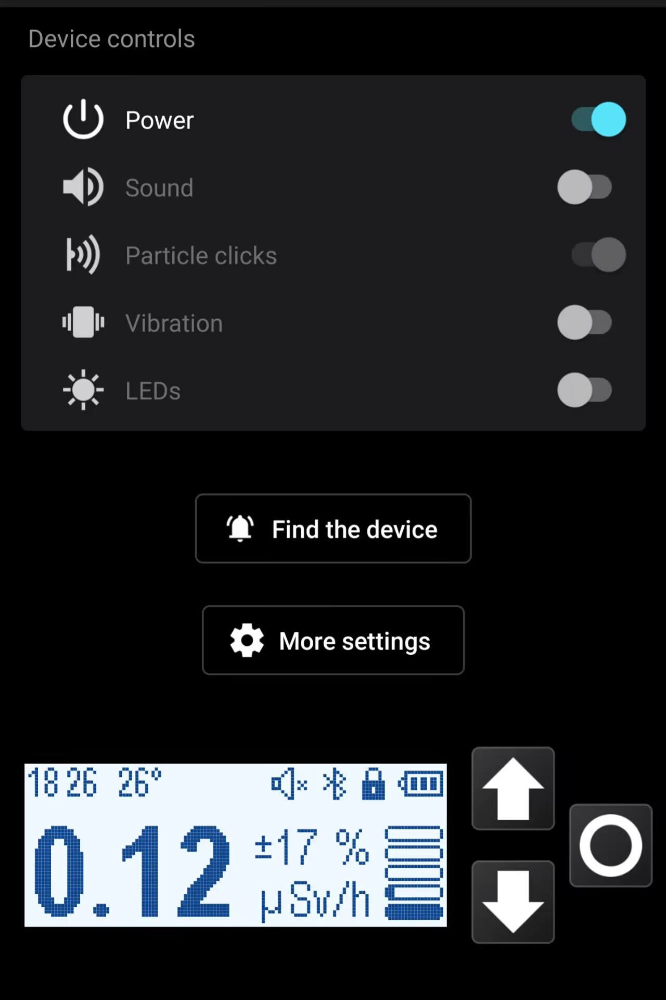
β射线测量
由于外壳是塑料材质，所以它可以检测到一些高能量的β射线，这既是优点也是缺点。一方面，这会高估具有强混合源（例如铀陶瓷）的结果，另一方面，它会加快对此类源的响应速度，使搜索变得更加容易。对剂量强度变化的反应也会更快，在这方面非常有用。
反应速度
它在本底辐射的情况下反应速度由误差值而定，最快时不超过一秒刷新一次，随着误差的降低递进放慢刷新速度
测量比较
我分别测量了Am-241光子源和Cs-137源
Am-241光子源
RADIACODE 102:Avg:0.38μSv/h
参考值:0.23μSv/h
Cs-137源
RADIACODE 102:Avg: 0.41 μSv/h
参考值：0.27 μSv/h
概括
我使用大约一个半月，每天都带着它，大部分情况下运行得很稳定。
有能量补偿，并且可以轻松读取剂量率，但由于外壳是塑料材质，所以它可以检测到一些高能量的β射线，这既是优点也是缺点。
我没有讨论PC软件是因为一旦连接设备就会闪退，但智能手机软件运行的非常好，如果你不是特别需要PC连接的话，我认为这是一款性价比不错的产品。
它的优点还在于它很小，因此携带时不会妨碍。
如果你是为了光谱功能那我并不推荐购买它，因为它的能量分辨率较差，晶体也较小，并不适合用来进行高精度的光谱分析，但大概定性是可以做到的。
我认为这款机型是很容易携带去各种地方，它很轻，易于携带，对于想进阶的原子物理爱好者来说是不错的选择。